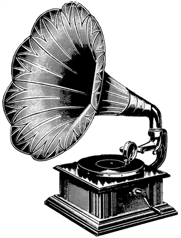

COMMUNIQUER
"Entre ce que je pense, ce que je veux dire, ce que je crois dire, ce que je dis, ce que vous avez envie d'entendre, ce que vous entendez, ce que vous comprenez... il y a dix possibilités qu'on ait des difficultés à communiquer. Mais essayons quand même... "
Bernard Werber
Bernard Werber

Que peut-on attendre vraiment de notre communication ? Où se plante t-on ? Pourquoi sommes-nous parfois déçu du retour de nos mots ?
Communiquer c'est rendre commun, partager, exister. C'est un vaste sujet qui nous concerne tous car la communication est fondamentale et essentielle pour l'homme : "on ne peut pas ne pas communiquer". Que l'on se taise ou que l'on parle, tout est communication. Nos gestes, notre posture, nos mimiques, notre façon d'être, notre façon de dire, notre façon de ne pas dire, toutes ces choses "parlent" .
Et aucun mot n'est neutre. Notre langage structure une grande part de nos pensées en même temps qu'il en est le reflet. Sinon des illustrations, nos mots sont déja des actions, plus nous pensons avec certains mots plus ceux-ci influencent notre perception de la réalité.
Alors quel impact les mots par lesquels nous choisissons de penser et de nous exprimer ont-ils sur nos propres pensées, nos ressentis ? Ceux de l'autre ? Jusqu'à quel point choississons-nous (in)consciemment les mots par lesquels nous pensons ?
Richard BANDLER (le père de la PN.L.) disait avec justesse que nous n'avons que le résultat de notre communication ! Dans les faits, parfois nous attendons un autre retour de notre discours en omettant que notre première communication est émotionnelle. L'émotion est au coeur de l'être humain et est le centre de toute relation. C'est bien souvent par rapport à ce que nous éprouvons que nous orientons nos modalités communicationnelles. Bien souvent, notre façon de transmettre consiste plus à déposer qu'à partager. Alors, lorsque vous pensez parler à quelqu'un, le faites-vous vraiment ou ne faites-vous que parler à vous-même sans vous en apercevoir ?
Communiquer c'est rendre commun, partager, exister. C'est un vaste sujet qui nous concerne tous car la communication est fondamentale et essentielle pour l'homme : "on ne peut pas ne pas communiquer". Que l'on se taise ou que l'on parle, tout est communication. Nos gestes, notre posture, nos mimiques, notre façon d'être, notre façon de dire, notre façon de ne pas dire, toutes ces choses "parlent" .
Et aucun mot n'est neutre. Notre langage structure une grande part de nos pensées en même temps qu'il en est le reflet. Sinon des illustrations, nos mots sont déja des actions, plus nous pensons avec certains mots plus ceux-ci influencent notre perception de la réalité.
Alors quel impact les mots par lesquels nous choisissons de penser et de nous exprimer ont-ils sur nos propres pensées, nos ressentis ? Ceux de l'autre ? Jusqu'à quel point choississons-nous (in)consciemment les mots par lesquels nous pensons ?
Richard BANDLER (le père de la PN.L.) disait avec justesse que nous n'avons que le résultat de notre communication ! Dans les faits, parfois nous attendons un autre retour de notre discours en omettant que notre première communication est émotionnelle. L'émotion est au coeur de l'être humain et est le centre de toute relation. C'est bien souvent par rapport à ce que nous éprouvons que nous orientons nos modalités communicationnelles. Bien souvent, notre façon de transmettre consiste plus à déposer qu'à partager. Alors, lorsque vous pensez parler à quelqu'un, le faites-vous vraiment ou ne faites-vous que parler à vous-même sans vous en apercevoir ?
Communiquer, c'est également concevoir laisser de la place à l'autre, ce qui pourrait sous-entendre s'oublier un peu. C'est percevoir et écouter ses propres émotions et celles des autres. Puis, c'est accepter que l'autre vive dans une autre réalité que la sienne. Et cet autre qui se place comme le récepteur est indispensable car sans lui, il n'y a pas de communication. Reste encore à se brancher sur la même fréquence que lui, sur le même canal.
Communiquer est une manipulation structurée. Quand bien même notre intention première voire délibérée n'est pas de marionnettiser dans un but "pervers", nous communiquons souvent dans l'intention d'influencer ou de modifier la compréhension de l'environnement ou le comportement d'autrui. Ainsi, les modalités de la communication ne doivent pas cacher l'essentiel: faire passer une information, un message, une pensée, une connaissance ou encore un sentiment ou une émotion. C'est encore créer une relation pour dialoguer avec qualité, relancer le dialogue, obtenir un intéret par l'argumentaire, influenceur de la conviction, ceci pour inciter l'autre à agir (selon sa propre volonté), dans la même direction que le communiquant.
L'hypnose Ericksonienne est une technique de communication objective et mesurable avec soi.
Communiquer est une manipulation structurée. Quand bien même notre intention première voire délibérée n'est pas de marionnettiser dans un but "pervers", nous communiquons souvent dans l'intention d'influencer ou de modifier la compréhension de l'environnement ou le comportement d'autrui. Ainsi, les modalités de la communication ne doivent pas cacher l'essentiel: faire passer une information, un message, une pensée, une connaissance ou encore un sentiment ou une émotion. C'est encore créer une relation pour dialoguer avec qualité, relancer le dialogue, obtenir un intéret par l'argumentaire, influenceur de la conviction, ceci pour inciter l'autre à agir (selon sa propre volonté), dans la même direction que le communiquant.
L'hypnose Ericksonienne est une technique de communication objective et mesurable avec soi.
EN RELATION


VISION
OSER
EMOTION
BESOINS (relationnels)
(double) CONTRAINTE
REPETITION
IMPLICITE